| 日付 | 2009年11月7日（土） - 2009年11月8日（日） | ||||
|---|---|---|---|---|---|
| 山域 | 谷川 | ||||
| メンバー | 単独 | ||||
| 山行形態 | 1泊2日無人小屋泊 | ||||
| アクセス | 電車、バス | ||||
| ルート (Map) |
|
11月に入り山も冬景色になってくる。北の方の山に登るのはそろそろ最後だろう。
幸い天気は晴予報なので、上越国境の名峰・谷川岳に登ることにする。
まだ雪はそれほど深くないだろうし、運がよければ純白の山々が望めそうだ。
1日目
8:46 土合駅到着。標高655m。
土合駅の長い階段を上ってようやく地上に出る。
初めてのときは面白いが、2回目以降はうんざりする。
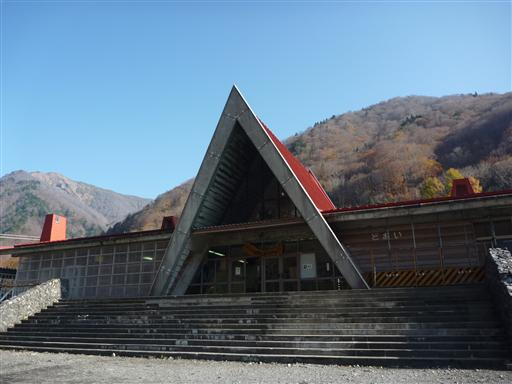
本日は快晴。谷川岳は駅から直接登れるありがたい山だ。
登山道入口まで車道を歩いていく。
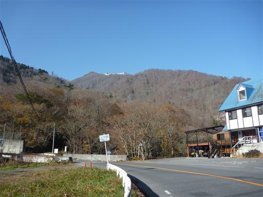
空を見上げるとロープウェイが動いている。
これに乗ると標高1310mの天神平まで一気に上がることができる。
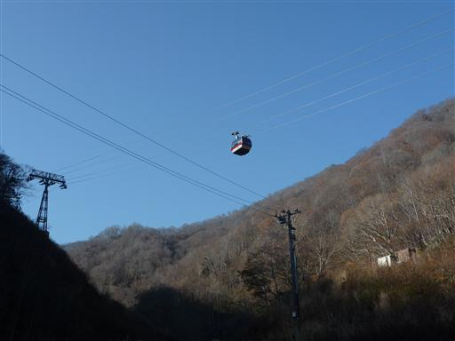
ロープウェイ乗り場。夏～秋は大混雑するところなのだろうが、
さすがにこの時期は人影が少ない。
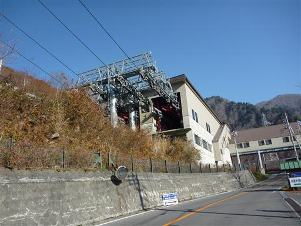
下から登る登山道入口は、ロープウェイ乗り場よりもさらに先にある。
付近は紅葉が少し残っている。この先、道は行き止まりのはずだが、
追い越していく車が少なからずある。この先に何かあるのだろうか？
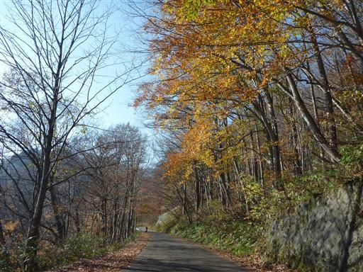
西黒尾根登山道入口。西黒尾根は山頂までの標高差が1200mしかないのに、
なぜか日本3大急登の一つに数えられている。
今回はマチガ沢沿いにつく巌剛新道を登る予定なので、ここは通過する。
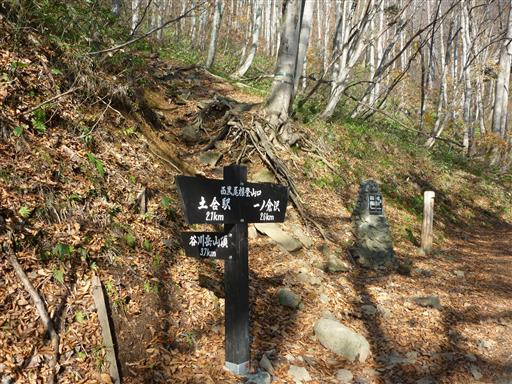
巌剛新道に到着。目の前には谷川岳の大岩壁が聳えている。
真白な岩壁が見えるかと思っていたが、思ったよりも雪が少ない。
追い抜いていった車はこの景色を見るための観光客だったようだ。
ここから登山道が始まるが、そこに入っていく人は全くいない。
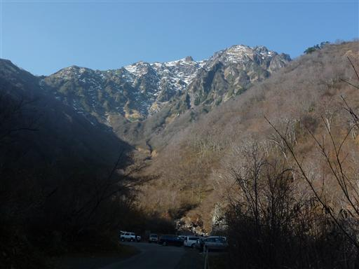
巌剛新道の登山道に入っていく。
この道は西黒尾根と標高差、傾斜ともほとんど変わりはない。
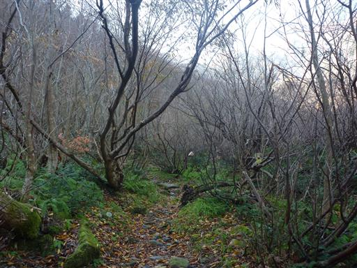
登山道には水が流れている。この陽気で雪が解けたのだろう。
この時期に雪解け水に出会えるとは思わなかった。
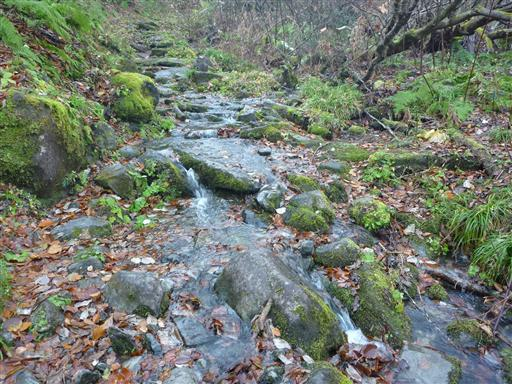
第一見晴に到着。ここからマチガ沢の展望が開ける。
マチガ沢の名の由来は、越後から上州への厳しい清水峠を越えてきた旅人が
ようやく町を目にし「町が見える」と発したことから名付けられたそうだ。
多くのクライマーを死に追いやった暗いイメージのある沢だが、
そんな、ほのぼのしたエピソードがあるとは知らなかった。
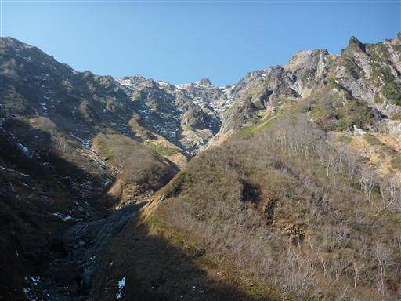
登山道に鎖場が現れる。意外に急峻な登山道だ。
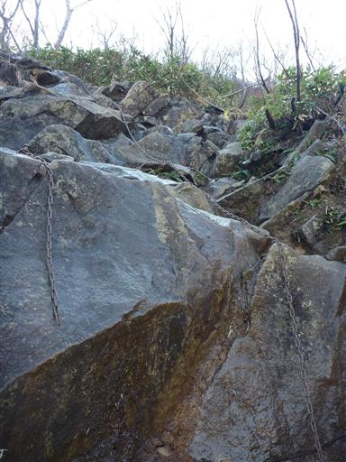
振り返ると湯檜曽川を挟んだ向かい側に朝日岳が聳えている。
2年前、谷川連峰で最初に登った山だ。
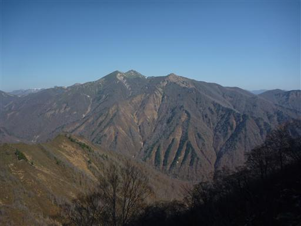
登山道に少し雪が現れだす。下から見ると大して雪は無いように見えたが、
さすがにこの季節だと所々で雪が積もっているようだ。
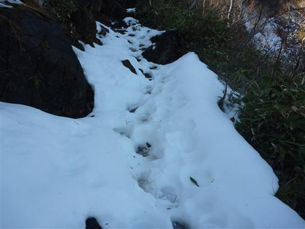
西黒尾根の中腹に合流する。視界が開け突然明るくなる。
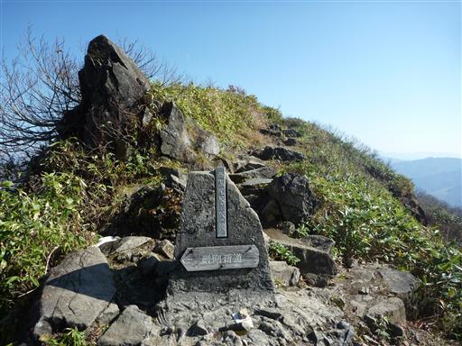
3大急登と言われるだけあって、ここから続く尾根はそれなりに急だ。
日光を遮るもののない尾根には全く雪がない。

マチガ沢を望むことはできないが、この尾根道も展望は良さそうだ。
巌剛新道ではほとんど登山者を見かけなかったが、西黒尾根ではちらほらと人が歩いている。
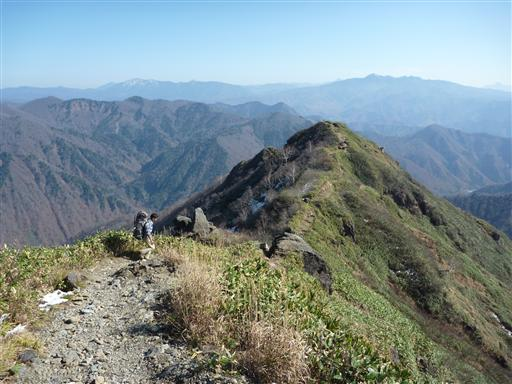
岩が積み重なる急峻な尾根道を登っていく。
快晴の空の下、谷川岳の双耳峰が近づいてくる。
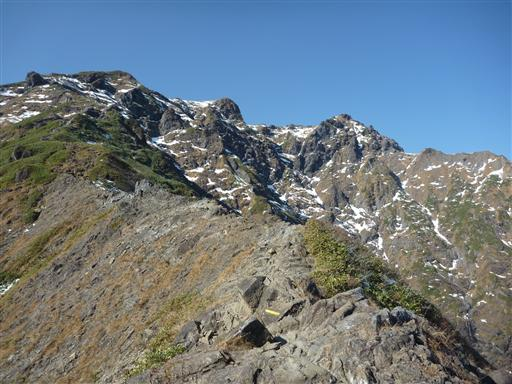
のっぺりとした岩場。このあたりの岩はよく滑る。蛇紋岩だろうか？
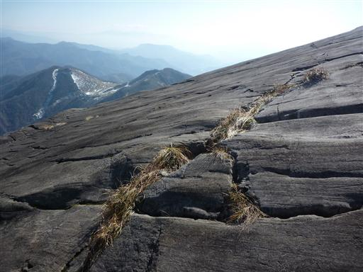
振り返ると赤城山、武尊山などの上州の山々が手にとるように見える。

大きな岩を通り過ぎたところに「ザンゲ岩」の標識がある。
できれば岩が見えるところに標識を立ててほしかったが…

上からザンゲ岩を見下ろす。
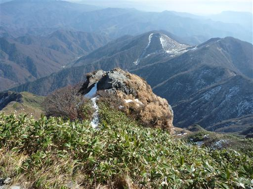
稜線近くまで登ってくると、西側の展望も開けてくる。
真正面に見えるのは川棚ノ頭。
登山道すらないマイナーピークだが、その姿に心引かれる。
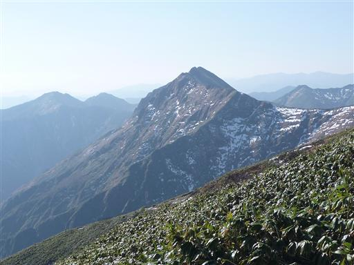
左手に天神尾根が見えてくる。思ったよりも歩いている人が少ない。
この季節になると、ロープウェイを使って手軽に登る観光客よりも
下からまともに登る登山者の方が多いのかもしれない。
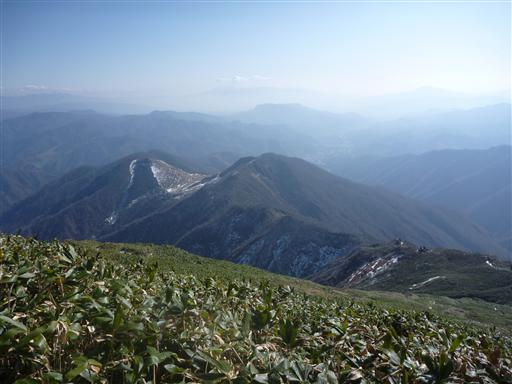
山頂直下。この辺りの岩壁は垂直に近い。
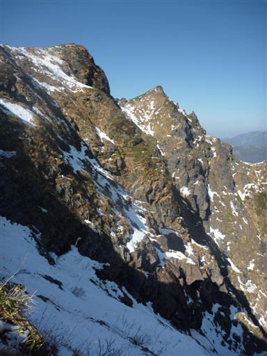
天神尾根との合流点に到着。
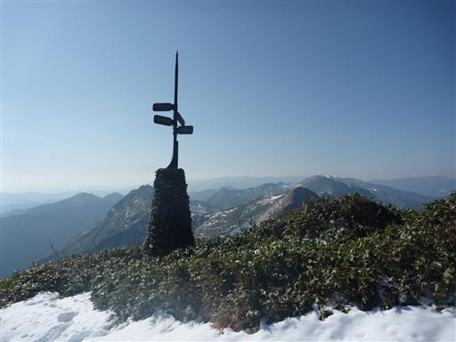
さすがにここまで標高を上げると、尾根道と言えども雪がある。

ストックが突き刺さった跡。奥を覗くと雪が青く光っている。
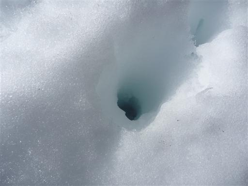
12:27 谷川岳トマの耳山頂到着。
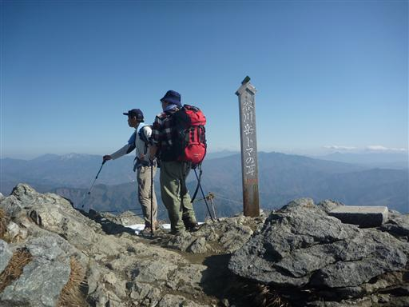
谷川岳から西に続く上越国境稜線を望む。
もっと真白な景色を期待していたが、大展望なのでこれでも満足だ。
仙ノ倉山、平標山と稜線は遠く続いている。
右奥に見える山頂が平らな山は苗場山だ。
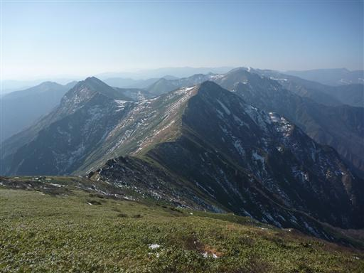
谷川岳オキの耳が間近に見える。
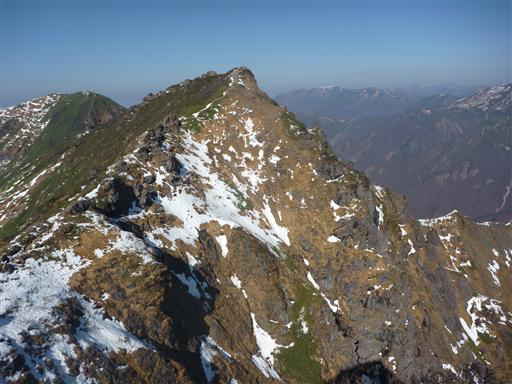
左に見えるのは今年登った巻機山、中央に見える2峰は
昨年登った越後駒ヶ岳と中ノ岳。思えばいろんな山に登ったものだ。
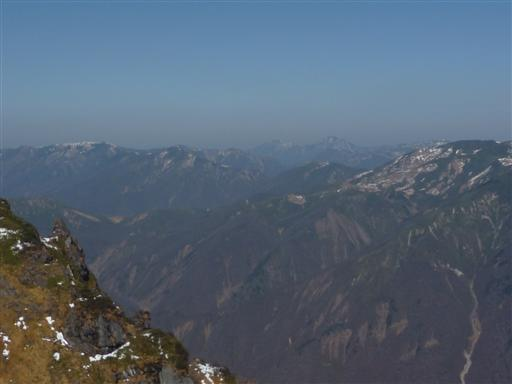
30分ほど山頂で休憩し、大展望の頂を辞す。
13:07 谷川岳オキの耳山頂到着。標高1977m。
こちらが谷川岳の最高峰だ。
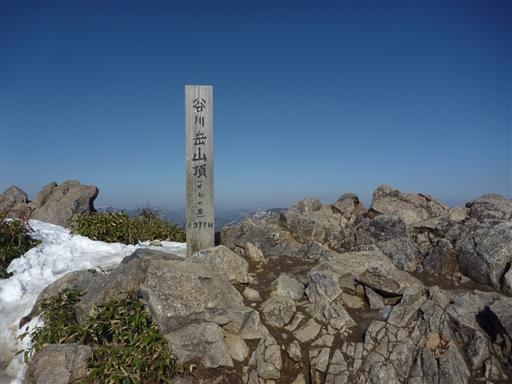
トマの耳を望む。マチガ沢の凄まじい岩壁が切れ落ちている。
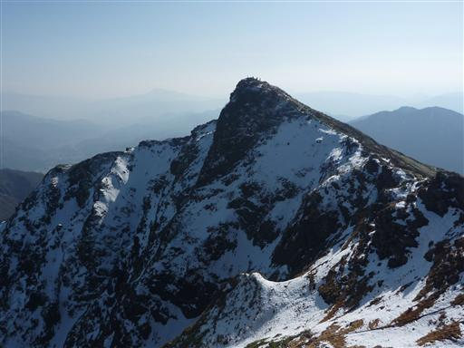
谷川岳から西に続く平標山までの稜線は興味があるのだが、
そこを歩いて見たいと言ってる友人もいるので、
単独行の今回は北上ルートを歩くことにする。
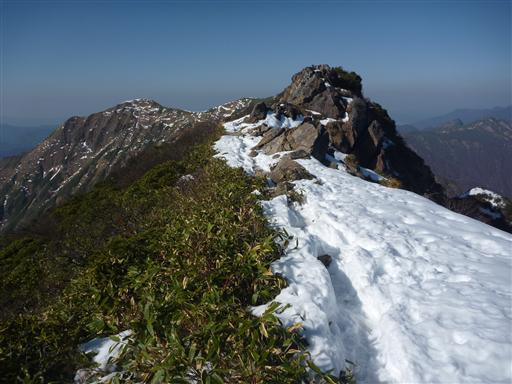
登山道の途中に鳥居が現れる。
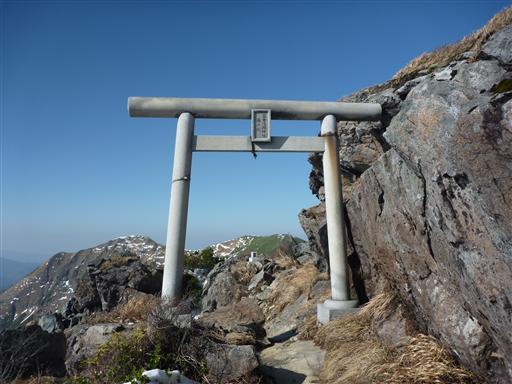
富士浅間神社奥宮。立派な鳥居に比べてなんと粗末な神社だろう。
いくら山の上とは言え、手のひらサイズのこんな小さな神社は初めて見た。
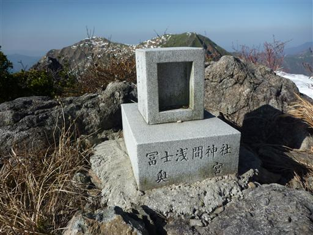
この付近の稜線はちょうど一ノ倉岩壁の真上。下を覗き込む。
岩壁が垂直なので、1000m下の下界が足元に見える。
ここは谷川岳で最も難しい岩場で、世界一多くの死者を出しているところだ。
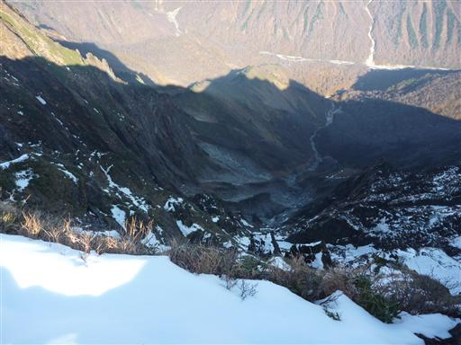
振り返ると双耳峰の谷川岳と、異様な一ノ倉岩壁が聳えている。
谷川岳のハイライトだ。
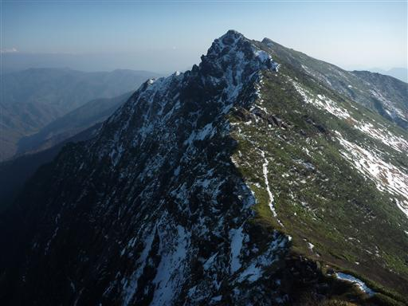
一ノ倉避難小屋に到着。入れるのは1～2人だ。
外観も内部もきれいではなく、あまり泊まりたくはない避難小屋だ。
谷川連峰は人の多さの割にはこういった小粒な避難小屋が多い。
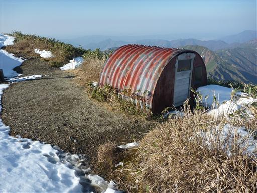
14:16 一ノ倉岳山頂到着。標高1974m。
山よりも岩壁でその名を知られている。
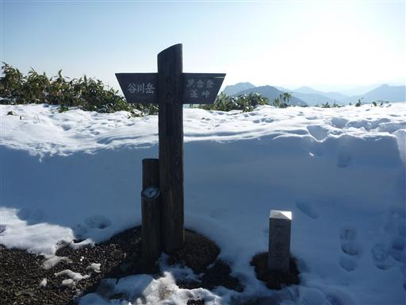
山頂からは「耳二つ」と呼ばれる谷川岳の可愛らしい姿が望める。
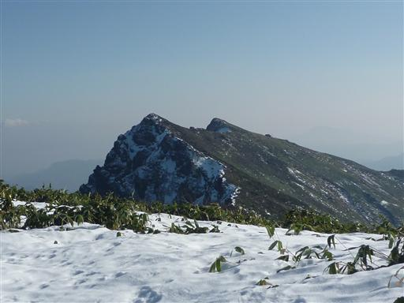
雪が積もる稜線を歩いていく。ここまで来ると雪に足跡は少なく、
登山者の姿もほとんど見かけない。
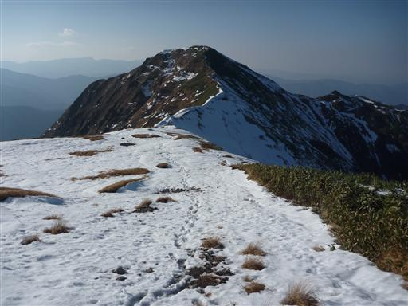
14:39 茂倉岳山頂到着。標高1978m。
ここは谷川岳よりも標高が高い。谷川連峰には谷川岳よりも標高の高い山がいくつかある。
それでも谷川岳が主峰なのは、その山容が立派だからだろう。
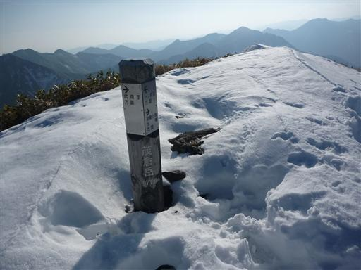
ここからは明日辿る予定の稜線が見渡せる。
中央の三角錐の山が明日の目的地・大源太山だ。

小屋は稜線から少し外れたところにあるので、そこまで下る。
14:53 茂倉岳避難小屋到着。標高1880m。
谷川連峰にある数少ないまともな避難小屋だ。
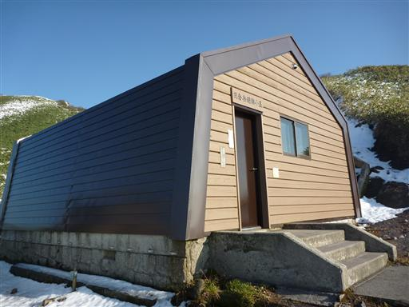
この小屋も酷くぼろかったのだが、1ヶ月ほど前に立て替えられたばかり。
トイレもあるし、当然部屋も非常にきれいだ。
今夜ここに泊まったのは2人だけだった。
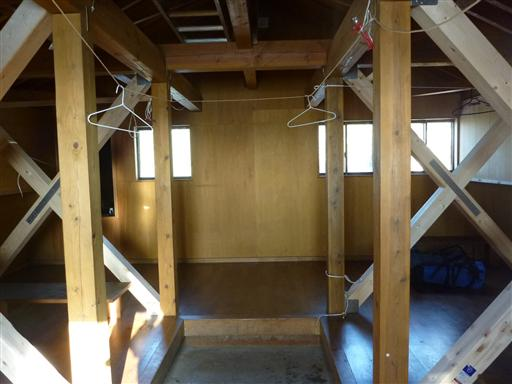
夕日が落ちていく。一般的に天候が安定しない谷川連峰だが、今日は完璧な天気だった。
明日も晴れ予報なので楽しみだ。
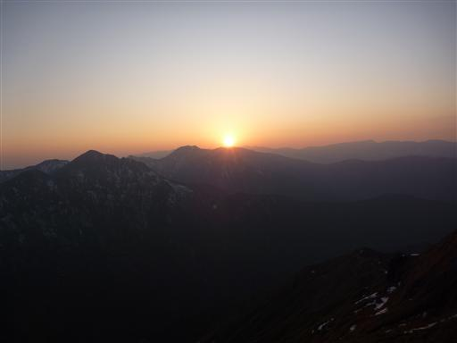